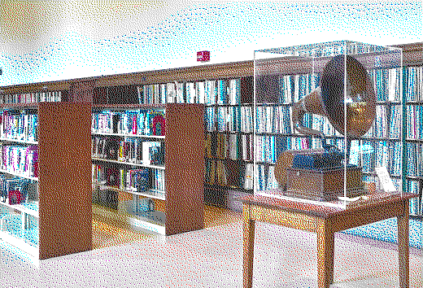
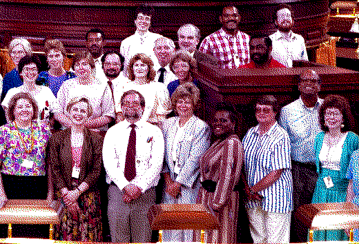

Paradox AvoidanceParadox Avoidance
Paradox AvoidanceParadox Avoidance

The largest of the FTAA's divisions, Paradox Avoidance (PA) ensures that the organization's operations are both physically and historically sound. With a staff of both theoretical physicists and historians, PA offers analysis of plans and operations of the FTAA for both their historical and physical impacts. The staff of PA help to guide the organization's operations and have been the incubator of some of the most important missions the FTAA has ever undertaken.


Mission | Programs and Operations | Employee Data Storage | Index
Need help? Have a temporal policy question? Email us at ftaaweb@stjc.edu or by phone at (202) 738-9235.
Last Updated: November 19, 1993
This site is best viewed using the NCSA Mosaic WWW browser.